musubo LINE接続マニュアル
「LINEアカウントを登録」の画面で押す「取得方法を見る」「設定方法を見る」の中身です。手順の番号は、画像の赤い番号と同じです。
手順2 チャネルID・チャネルシークレットの取得（Messaging API）
つなぐ公式アカウントの「チャネルID」と「チャネルシークレット」を、musubo の手順2の欄に貼ります。一番かんたんなのは LINE公式アカウントマネージャーから取る方法です。
用意するもの
- LINEアカウント
- その公式アカウントの「管理者」としてログインできるもの
- 開くサイト
- LINE公式アカウントマネージャー（manager.line.biz）
まだ Messaging API を使っていないとき（新しい公式アカウント）
作ったばかりの公式アカウントは「ステータス：未利用」になっています。先にこれを済ませます。
- 1
LINE公式アカウントマネージャーで公式アカウントを選び、右上の 「設定」 を押します。
- 2
左のメニューで 「Messaging API」 を押します。
- 3
「Messaging APIを利用する」 を押します。
- 4
初めてなら「プロバイダーを作成」に会社名や店名を入れます（例：株式会社サンプル）。
- 5
すでにプロバイダーがあるときは、その名前を選びます。プロバイダーは「会社の箱」です。手順3の LINE Login チャネルも同じ箱に作ります。あとから変えられません。
- 6
「同意する」 を押します。
- 7
「プライバシーポリシーと利用規約」の画面が出ます。2つとも空のまま 「OK」 を押します（あとから登録できます）。
- 8
確認の画面で、プロバイダー名が自分の会社名になっていることを確かめて 「OK」 を押します。
- 9
ステータスが 「利用中」 になれば完了です。続けて下の「取り方」へ進みます。
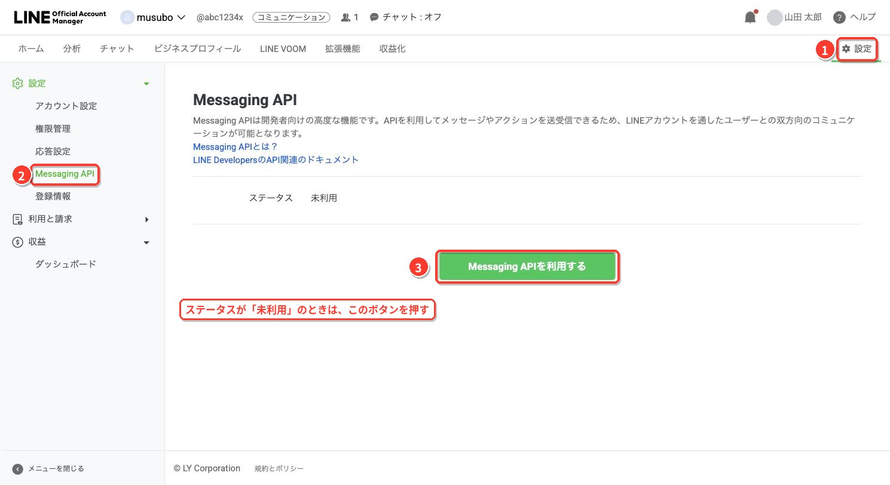
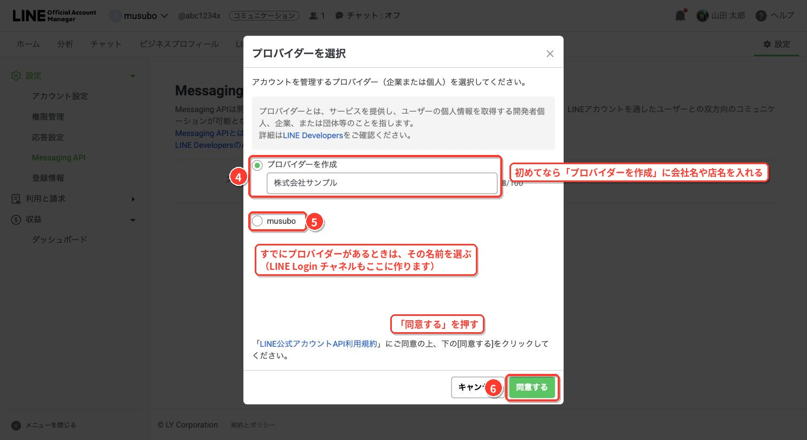
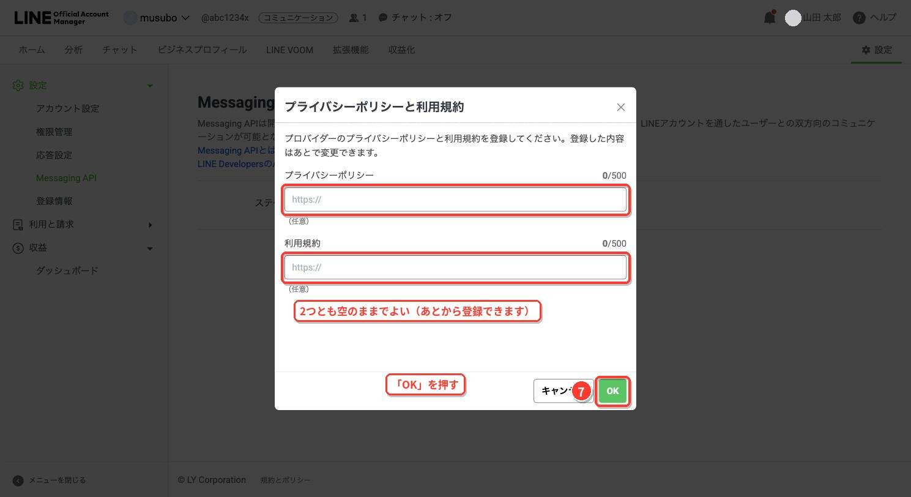
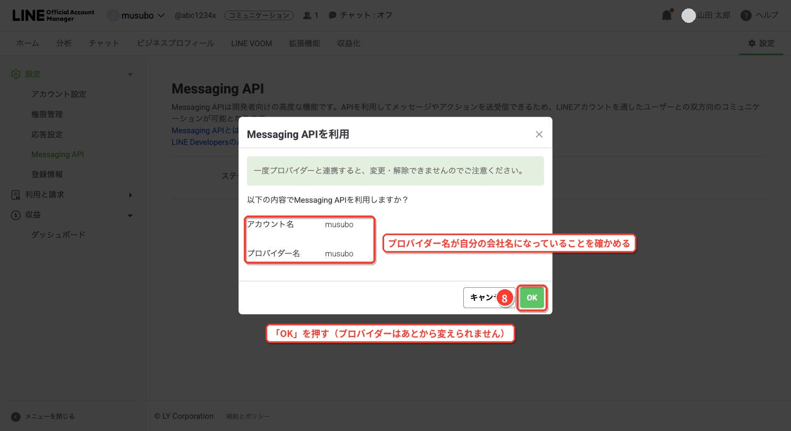
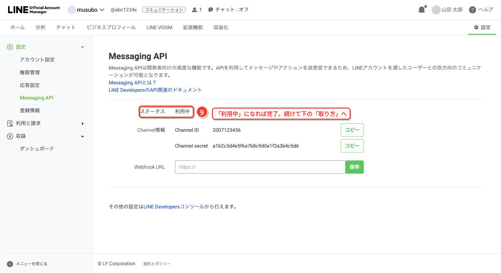
取り方（LINE公式アカウントマネージャー）
- 1
LINE公式アカウントマネージャーを開き、つなぐ公式アカウントを選びます。画面右上の 「設定」 を押します。
- 2
左のメニューで 「Messaging API」 を押します。
- 3
「Channel ID」の右の 「コピー」 を押し、musubo の チャネルID の欄に貼ります。
- 4
「Channel secret」の右の 「コピー」 を押し、musubo の チャネルシークレット の欄に貼ります。
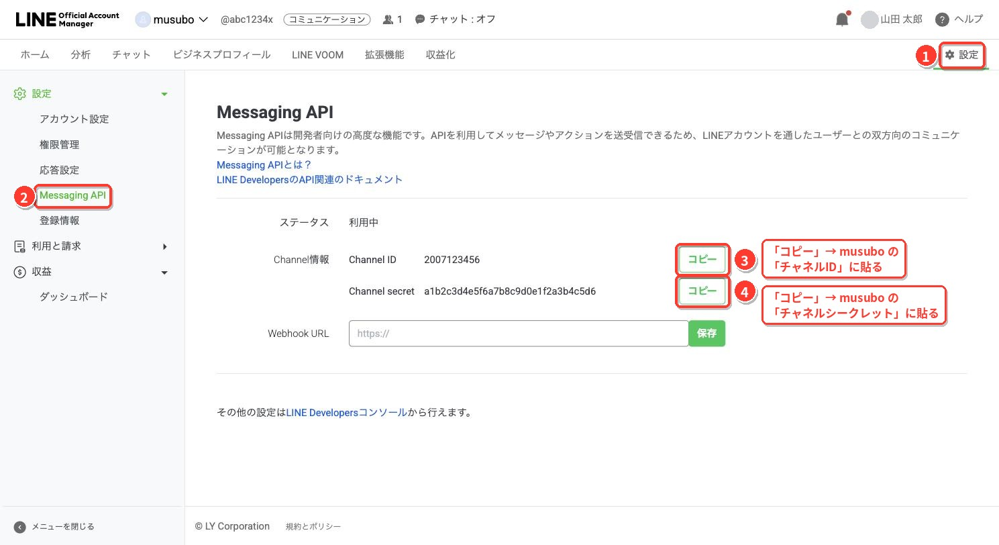
「Webhook URL」の欄は空のままで進めてください。musubo が手順4で自動で入れます。
別の取り方（LINE Developers から）
LINE Developers（developers.line.biz/console）にログインし、プロバイダー →「Messaging API」のチャネルを開きます。
- 1
「チャネル基本設定」 タブを開きます。
- 2
「チャネルID」を musubo の チャネルID の欄に貼ります（右のコピーの印を押すとコピーできます）。
- 3
同じ画面を下へ進み、「チャネルシークレット」を musubo の チャネルシークレット の欄に貼ります。
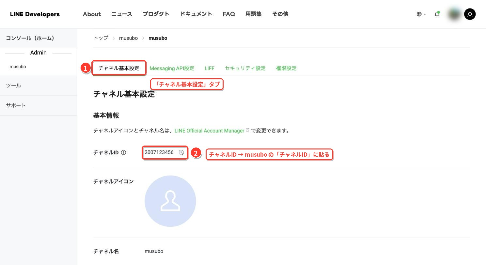
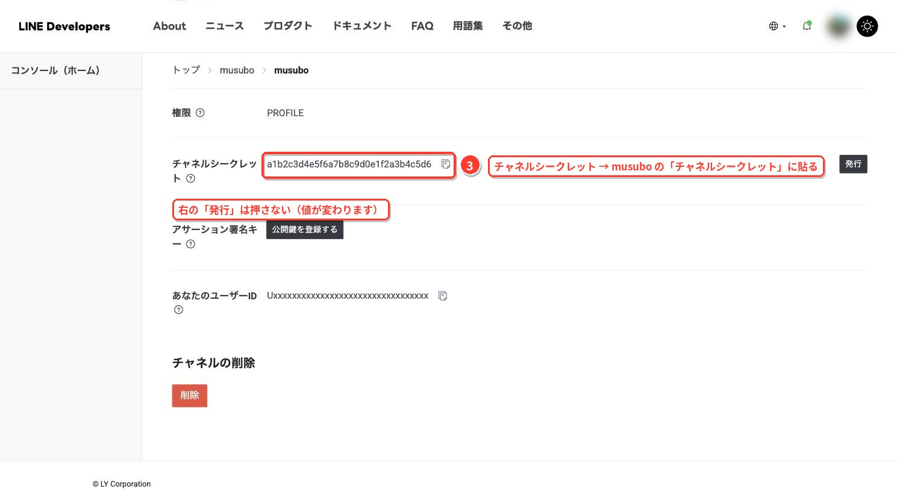
「発行」ボタンは押さないでください。押すとシークレットが新しい値に変わり、いままでの接続が切れます。
手順3 LoginチャネルID・Loginチャネルシークレットの取得（LINE Login）
友だち追加URL・QR・LIFF（LINEの中で開く画面）に使う「LINE Login チャネル」の情報を、musubo の手順3の欄に貼ります。LINE Developers で取ります。
LINE Login チャネルは、手順2の Messaging API と 同じプロバイダー に置いてください。プロバイダーが違うと、同じ人が別の友だちとして数えられます。
取り方
- 1
- 2
「LINEログイン」と書かれたチャネルを押します。無いときは、下の「LINE Login チャネルの作り方」で作ってから戻ってください。
- 3
「チャネル基本設定」 タブを開きます。
- 4
「チャネルID」を musubo の LoginチャネルID の欄に貼ります。
- 5
下へ進み、「チャネルシークレット」を musubo の Loginチャネルシークレット の欄に貼ります。
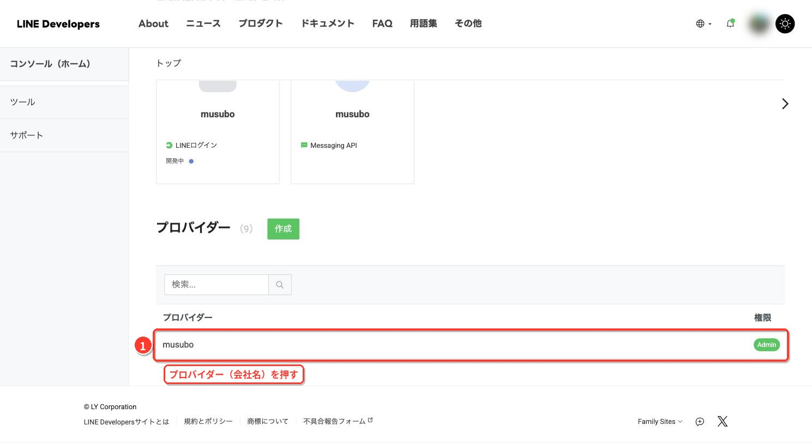
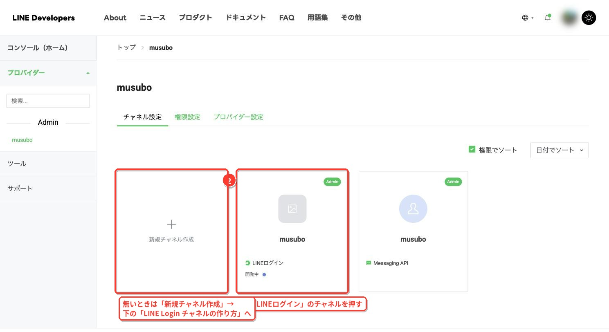
チャネル名の横が 「開発中」 のときは、その文字を押して「公開」にしてください。開発中のままだと、管理者以外の人が友だち追加URLからログインできません。
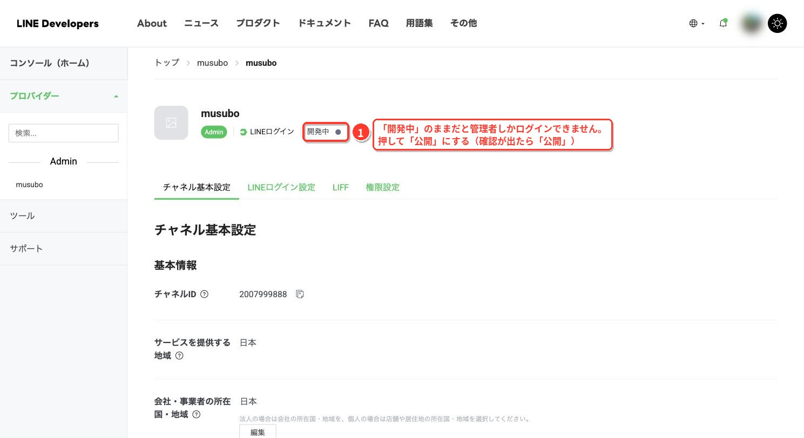
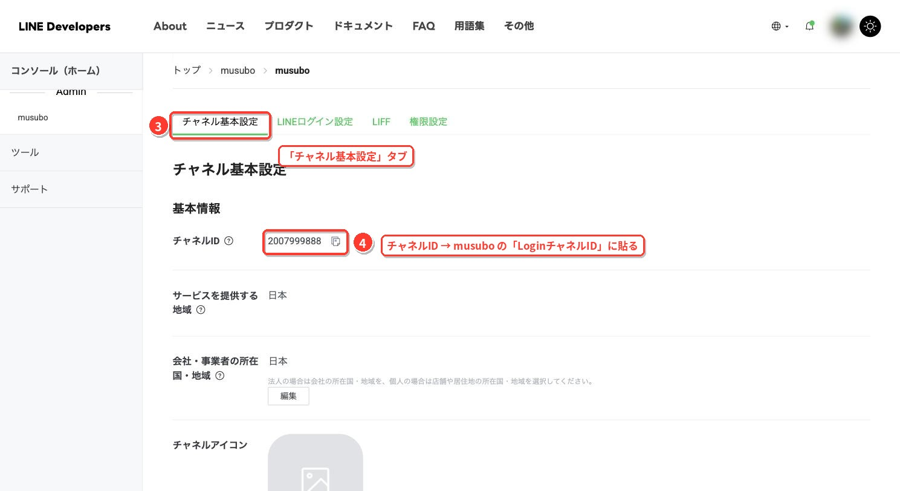
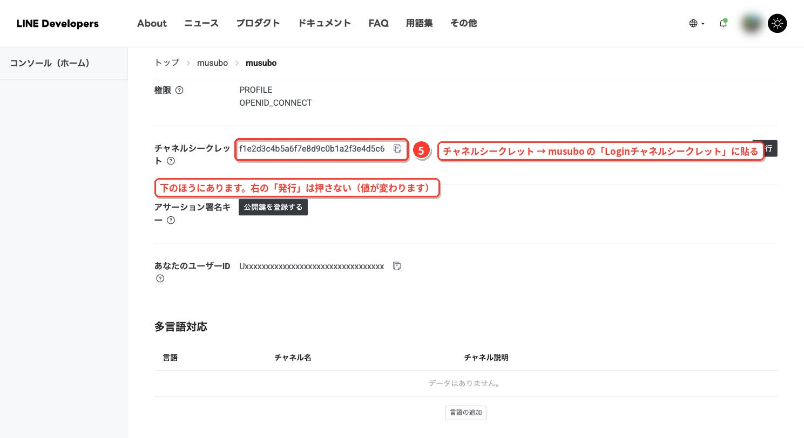
LINE Login チャネルの作り方（まだ無い人）
プロバイダーの画面で「新規チャネル作成」を押すと、作る画面になります。5分ほどで終わります。
- 1
チャネルの種類で 「LINEログイン」 を選びます。
- 2
「プロバイダー」が手順2の Messaging API と同じ会社名になっていることを確かめます。
- 3
「サービスを提供する地域」は 日本 を選びます。
- 4
「会社・事業者の所在国・地域」は 日本 を選びます。
- 5
「チャネル名」に会社名や店名を入れます（例：株式会社サンプル）。
- 6
「チャネル説明」に一言入れます（例：musubo で使う）。
- 7
「アプリタイプ」は ウェブアプリ にチェックします。
- 8
「2要素認証の必須化」はオンのままでかまいません。
- 9
「メールアドレス」に連絡が取れるメールアドレスを入れます。
- 10
「LINE開発者契約に同意します」にチェックします。
- 11
「作成」 を押します。作ったチャネルの「チャネル基本設定」が開きます。
- 12
チャネル名の横の 「開発中」 を押して「公開」にします。そのあと、上の取り方の 4・5 に進みます。
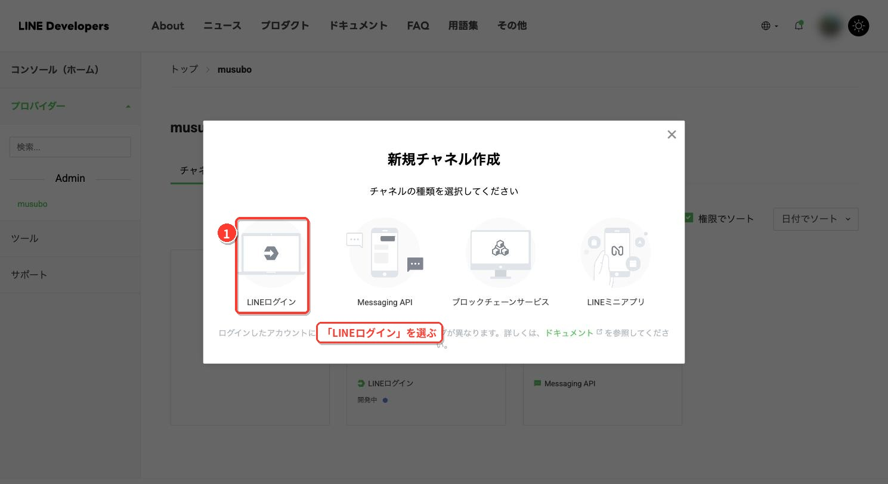
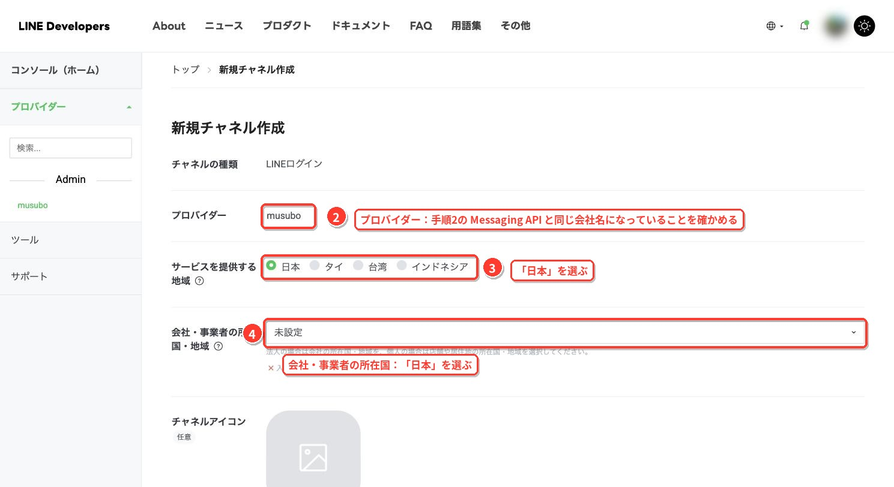
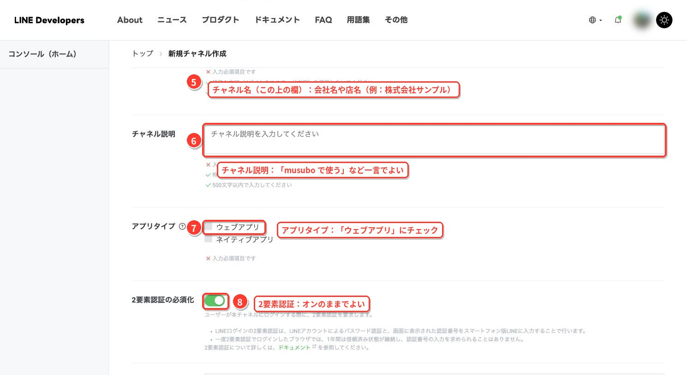
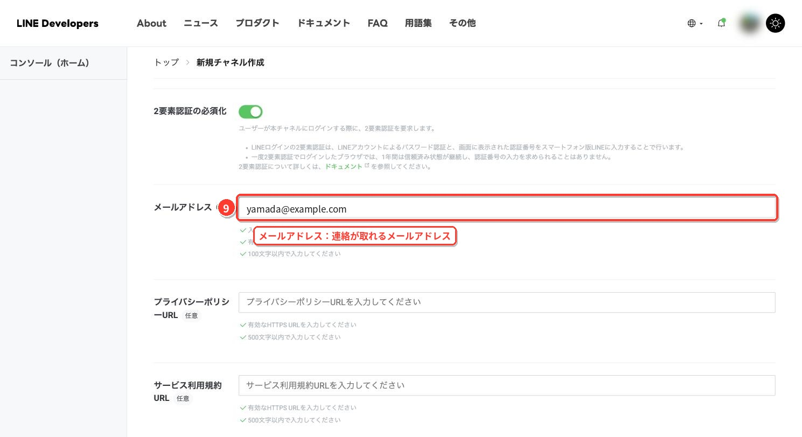
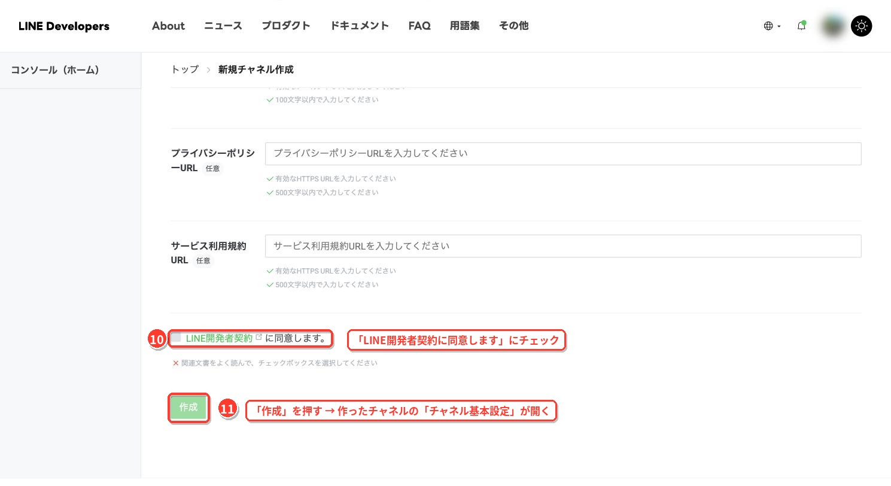
チャネルアイコン・プライバシーポリシーURL・サービス利用規約URLは空のままで作れます。
手順4 LINE側の設定（Webhook・応答・Callback）
musubo が「接続して設定する」を押したあとに自動でできないものが4つあります。LINE側で行い、musubo の手順4に戻って「接続して保存」を押してください。
- A
- 「Webhookの利用」をオンにする（LINE Developers）
- B
- あいさつメッセージ・応答メッセージをオフにする（LINE公式アカウントマネージャー）
- C
- Callback URL を貼る（LINE Developers・LINE Login チャネル）
- D
- 公式アカウントをリンクする（LINE Developers・LINE Login チャネル）
A 「Webhookの利用」をオンにする
LINE Developers でプロバイダー →「Messaging API」のチャネルを開きます。
- 1
「Messaging API設定」 タブを押します。
- 2
「Webhook設定」の 「Webhookの利用」 を押してオン（緑）にします。「Webhook URL」には musubo が入れた URL が入っています。触らないでください。
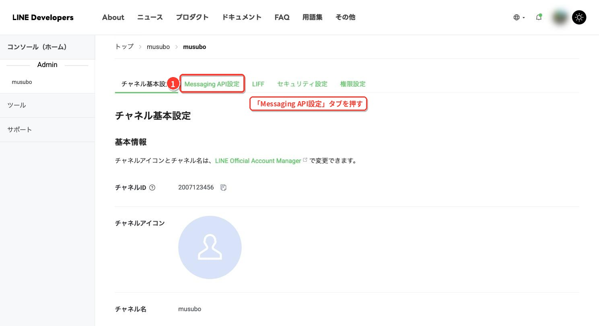
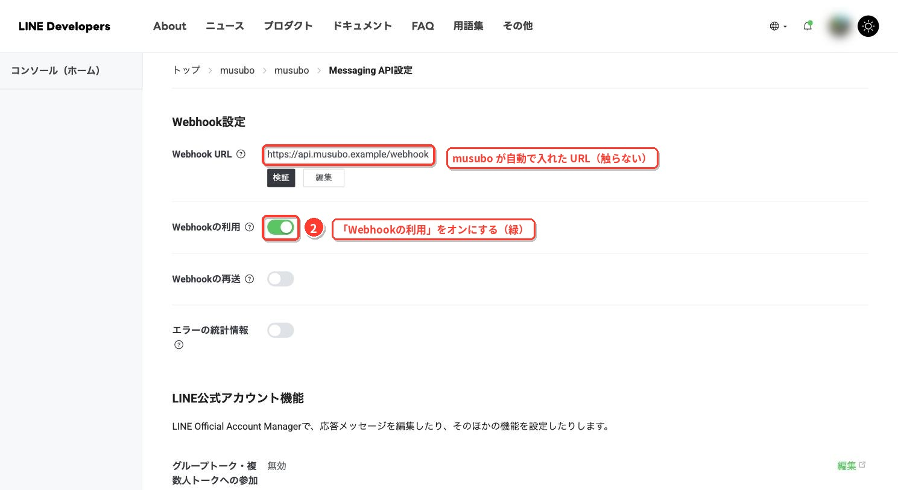
「Webhook URL」が空のときは、musubo の手順4で「接続して設定する」がまだ通っていません。musubo に戻って先に接続してください。
B あいさつメッセージ・応答メッセージをオフにする
オンのままだと、musubo の配信と LINE の自動返信が二重に届きます。LINE公式アカウントマネージャーで切ります。
- 1
LINE公式アカウントマネージャーで公式アカウントを選び、右上の 「設定」 を押します。
- 2
左のメニューで 「応答設定」 を押します。
- 3
「あいさつメッセージ」 をオフにします。
- 4
「応答メッセージ」 をオフにします。「チャット」はオフのままにしてください（オンにすると musubo にメッセージが届きません）。
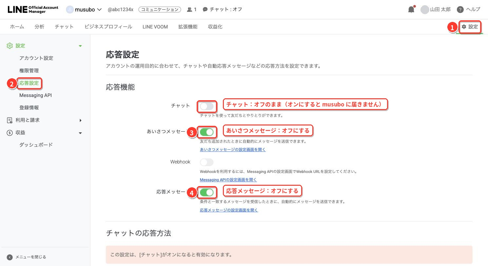
LINE Developers の「Messaging API設定」にある「応答メッセージ」「あいさつメッセージ」の右の「編集」からも、同じ画面を開けます。
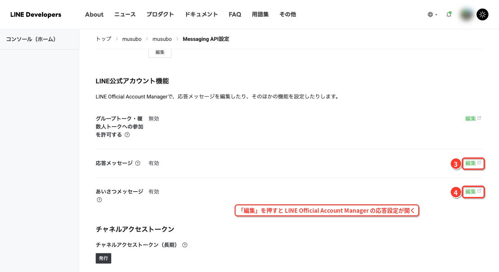
C Callback URL を貼る
パソコンのブラウザから友だち追加する人のために必要です。LINE Developers でプロバイダー →「LINEログイン」のチャネルを開きます。
- 1
「LINEログイン設定」 タブを押します。
- 2
「ウェブアプリでLINEログインを利用する」がオン（緑）になっていることを確かめます。オフなら押してオンにします。
- 3
「コールバックURL」の 「編集」 を押します。
- 4
musubo の手順4の画面にある Callback URL を「コピー」して、ここに貼ります。
- 5
「更新」 を押します。
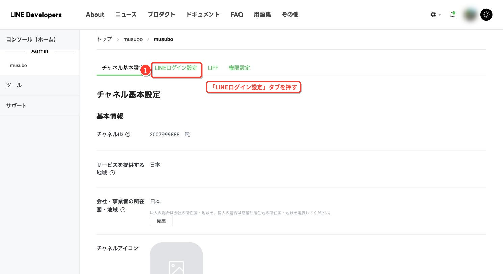
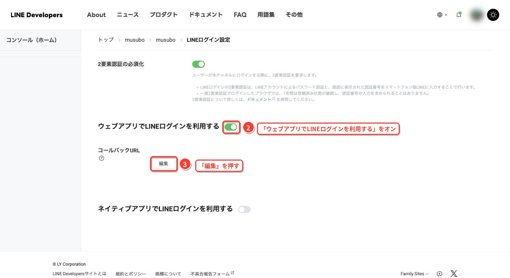
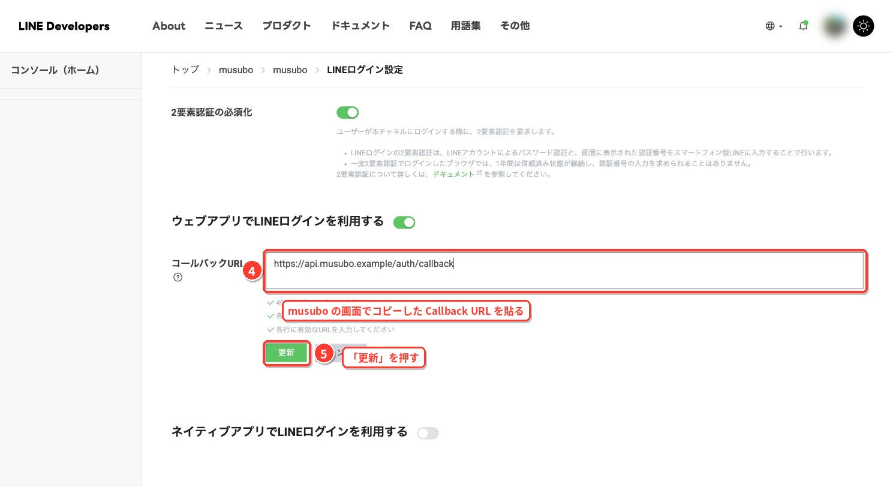
すでに別の URL が入っているときは、消さずに改行して下の行に足してください（1行に1つ）。
D 公式アカウントをリンクする
友だち追加URLから開いたときに「友だち追加」の案内を出すために必要です。LINE Login チャネルの「チャネル基本設定」タブの一番下にあります。
- 1
「友だち追加オプション」の「リンクされたLINE公式アカウント」で 「編集」 を押します。
- 2
一覧から、手順2でつないだ公式アカウントを選びます。
- 3
「更新」 を押します。
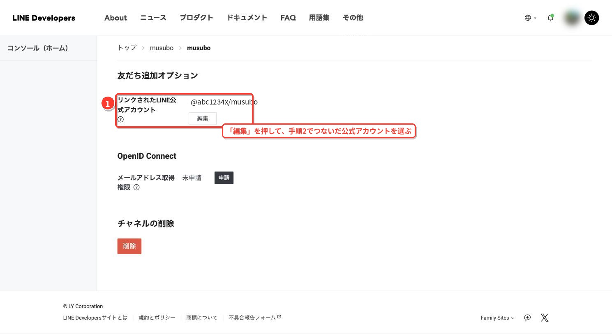
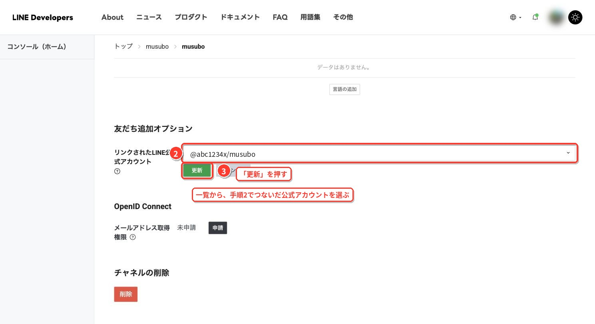
4つ終わったら、musubo の手順4に戻って「接続して保存」を押してください。設定がまだの項目は、その行に理由が出ます。
画像の値（チャネルID・シークレット・メールアドレスなど）は説明用の例です。実際の値は自分の画面のものを使ってください。